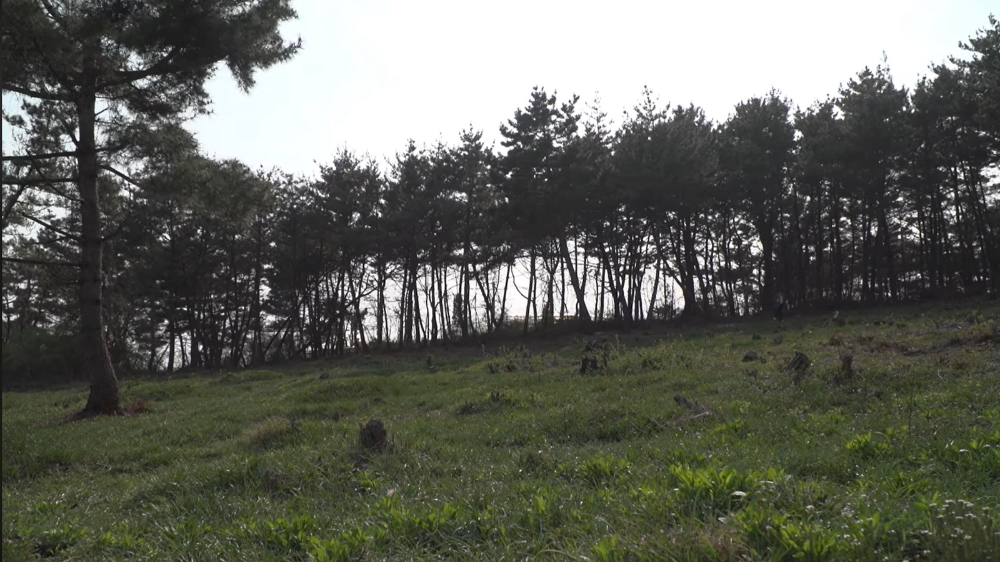

Documentary series · 2015–2016
Traces of Poverty
가난의 경로
Residents of single-room lodgings in Seoul’s Dongja-dong are all told to leave at once. The series records how they came to live there and what became of them after.
- Director
- Changmin Lee
- Producer
- Minseok Jo
- Format
- Documentary series
- Episodes
- 6
- Year
- 2015–2016
- Cinematography
- Changmin Lee
- Assistant director
- Hyunkyung Oh
- Published with
- Hankyoreh 21
Synopsis
In 2015, residents of a single-room lodging house near Seoul Station are told to leave. Some fight to stay; others move on in search of a room they can afford. Made alongside Hankyoreh 21’s year-long reporting project, the video series follows the residents’ accounts of how they came to Dongja-dong and where they go after the eviction notice.
Press
- Hankyoreh 21 · 2015“Walking Through the Wounds of Development” (in Korean) ↗